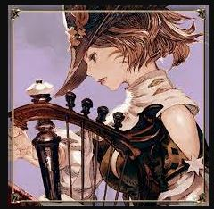

|  |
Grimmalkinlvl 2 Bard Bards are known to be a charismatic class, your race adds advantage to it as there is a plus 2 to charisma, good at diplomacy, dark vision, and other extra advantages depending on your elf heritage. Bards are advised to make sure their Charisma is above the level of 13, followed by Dexterity, Constitution, Intelligence, Wisdom, and Strength. |
| Dates | Work |
|---|---|
| 1207-1223 | Lead Bard in local band |
| 1229 | Court Story Teller |
| Lute | 🖤🖤🖤 |
| Harp | 🖤🖤 |
| Guitar | 🖤🖤🖤🖤 |
| Flute | 🖤🖤🖤 |